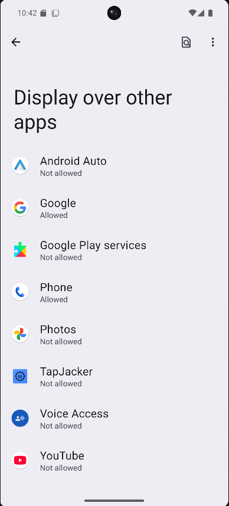
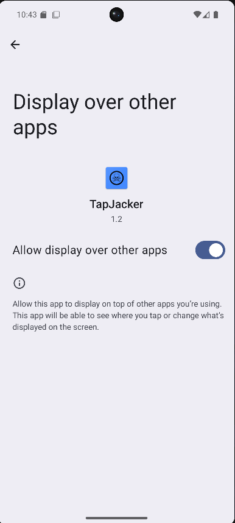
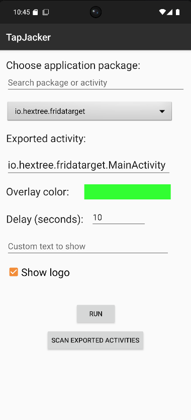
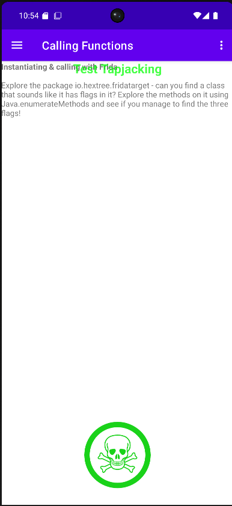

Offensive Mobile Security • Android Overlay Research
TapJacker
Android UI Redressing Toolkit
TapJacker est une application Android conçue pour démontrer des scénarios de Tapjacking, identifier des activités exportées exploitables et illustrer, dans un cadre contrôlé, comment un overlay peut être utilisé pour masquer l’interface réelle d’une application cible.
Projet et objectif
UI Redressing
Android Pentest
Exported Activities
Overlay Abuse
TapJacker n’est pas seulement une preuve de concept visuelle. L’application sert à illustrer le chaînage entre la découverte de composants Android exposés et la mise en place d’un overlay plein écran pour démontrer une attaque de type Tapjacking dans un environnement de test autorisé.
Scanner la cible
L’application récupère les packages installés et peut filtrer automatiquement les activités exported=true afin d’identifier des surfaces d’attaque potentielles depuis le terminal Android lui-même.
Configurer l’overlay
Le pentester choisit la couleur, le texte, le logo et le délai d’exécution. L’objectif est de reproduire un scénario réaliste dans lequel l’interface affichée à l’utilisateur diffère de celle qu’il manipule réellement.
Lancer la démonstration
Une fois l’overlay affiché, TapJacker ouvre l’activité ciblée via un intent explicite. L’utilisateur voit l’overlay, tandis que l’activité réelle est ouverte en arrière-plan pendant la fenêtre temporelle définie.
Fonctionnalités principales
L’outil a été pensé comme un utilitaire de démonstration et de recherche offensive sur Android : assez simple pour être utilisé rapidement sur un appareil de test, mais suffisamment structuré pour illustrer le modèle de sécurité Android et ses limites pratiques.
Recherche de packages
Barre de recherche pour filtrer les applications installées et cibler rapidement un package précis.
Scan des activités exportées
Découverte des activités accessibles à l’extérieur afin d’identifier les points d’entrée exploitables.
Overlay personnalisable
Choix de la couleur, du texte et de l’affichage du logo pour adapter la démonstration au scénario souhaité.
Délai d’exécution
Configuration d’une fenêtre temporelle avant masquage de l’overlay afin de synchroniser l’attaque avec la cible.
Technical deep dive
Cette section détaille le fonctionnement interne de TapJacker, depuis la découverte des cibles jusqu’à l’affichage de l’overlay et au lancement de l’activité visée. Le but est d’expliquer précisément le modèle d’attaque et les hypothèses de sécurité exploitées.
Android security model
Android repose sur un modèle de sécurité basé sur l’isolation par application, les permissions et les intents. Malgré cette isolation, des composants inter-applications comme les Activities, Services, Broadcast Receivers et Content Providers permettent des interactions contrôlées entre applications.
Lorsqu’une activité est déclarée avec android:exported="true", elle devient accessible depuis une autre application via un intent. Cette configuration crée une surface d’attaque potentielle si les entrées ne sont pas correctement validées.
Principe du Tapjacking
Le Tapjacking est une attaque de type UI redressing. Une application malveillante affiche une interface superposée au-dessus d’une application légitime. L’utilisateur croit cliquer sur ce qu’il voit à l’écran, alors que ses interactions concernent l’application ouverte en dessous.
- masquage de l’interface réelle
- ouverture d’une activité sensible
- interactions utilisateur sous overlay
- démonstration d’un scénario réaliste de tromperie visuelle
Permissions exploitées
- SYSTEM_ALERT_WINDOW
Autorise l’affichage d’une fenêtre au-dessus des autres applications. C’est la permission indispensable pour la création de l’overlay. - QUERY_ALL_PACKAGES
Permet de lister les applications installées afin de sélectionner une cible locale et d’accélérer la phase de reconnaissance. - Intent explicite
Le lancement de la cible ne repose pas sur une permission dédiée mais sur la possibilité d’invoquer une activité exportée depuis une autre application.
Manifest primitives
AndroidManifest.xml
<uses-permission android:name="android.permission.SYSTEM_ALERT_WINDOW"/> <uses-permission android:name="android.permission.QUERY_ALL_PACKAGES"/>
Découverte des applications installées
TapJacker utilise l’API PackageManager afin de récupérer toutes les applications présentes sur le terminal. Cette étape sert à alimenter la liste de cibles disponibles dans l’interface et à permettre une recherche en direct sur les packages.
Package enumeration
MainActivity.java
PackageManager pm = getPackageManager(); List<ApplicationInfo> apps = pm.getInstalledApplications(0);
Découverte des activités exportées
Le bouton de scan parcourt les activités des applications installées et conserve celles dont l’attribut exported est positionné. Cela permet d’identifier rapidement des points d’entrée accessibles depuis l’extérieur.
Exported activity scan
MainActivity.java
PackageInfo pi = pm.getPackageInfo(app.packageName, PackageManager.GET_ACTIVITIES);
if (ai.exported) {
results.add(ai.packageName + "/" + ai.name);
}
Création de l’overlay
Le cœur de l’attaque repose sur la création d’un overlay plein écran via WindowManager. L’overlay est affiché au-dessus des autres applications et reste non focus pour ne pas capturer l’attention du système comme une activité classique.
Dans la logique actuelle, l’overlay est affiché avec des flags qui le rendent non focusable et non touchable, ce qui maintient la couche visuelle au-dessus de la cible tout en laissant l’environnement applicatif continuer son exécution en dessous.
Overlay window
MainActivity.java
WindowManager.LayoutParams.TYPE_APPLICATION_OVERLAY FLAG_NOT_FOCUSABLE FLAG_NOT_TOUCHABLE FLAG_LAYOUT_IN_SCREEN
Lancement de l’activité cible
Une fois l’overlay affiché, TapJacker déclenche l’ouverture de la cible en construisant un intent explicite composé du package et du nom de l’activité sélectionnée. Si l’activité est exportée et accessible, elle est lancée dans une nouvelle tâche.
Explicit intent launch
MainActivity.java
Intent intent = new Intent(); intent.setComponent(new ComponentName(packageName, activityName)); intent.setFlags(Intent.FLAG_ACTIVITY_NEW_TASK); startActivity(intent);
Interface de contrôle
L’interface utilisateur expose tous les paramètres nécessaires à la démonstration : recherche de package, activité exportée, couleur d’overlay, délai, texte personnalisé et affichage du logo. Elle a été pensée pour rendre l’orchestration de l’attaque rapide et compréhensible.
- sélection d’une cible via package
- scan direct des exported activities
- champ de délai pour la synchronisation
- message personnalisé pour l’overlay
Flow d’exécution
1. Reconnaissance
Le pentester filtre les applications installées ou lance le scan des activités exportées pour identifier une cible pertinente.
2. Préparation
Le message, le logo, la couleur et le délai de l’overlay sont configurés afin de correspondre au scénario de démonstration.
3. Exécution
L’overlay est affiché, l’activité cible est ouverte via un intent explicite puis l’overlay reste visible pendant la durée choisie.
4. Observation
Le comportement de la cible est observé afin d’illustrer l’impact d’une activité exportée insuffisamment protégée face à un overlay trompeur.
Bypassing Android protections
Android propose plusieurs mécanismes défensifs contre les overlays et les interactions obscurcies. En pratique, toutes les applications ne les implémentent pas correctement. TapJacker est précisément conçu pour illustrer cette différence entre le modèle de sécurité théorique et son implémentation réelle côté application.
Protections existantes
Les développeurs Android peuvent limiter ce type de scénario en s’appuyant notamment sur :
UI anti-obscuring primitives
Android defensive patterns
setFilterTouchesWhenObscured(true) View.isObscured()
- détection d’une vue recouverte par un overlay
- blocage des interactions quand la fenêtre est obscurcie
- validation plus stricte des intents entrants
- réduction du nombre de composants exportés
Pourquoi l’attaque reste viable
Dans de nombreux cas, les applications ne vérifient pas l’état obscurci des vues, exposent inutilement des activités ou supposent qu’une activité interne ne sera appelée que depuis leur propre interface. TapJacker montre précisément comment ces hypothèses peuvent être contredites dans un environnement contrôlé.
- activité exportée sans contrôles suffisants
- absence de filtrage des interactions obscurcies
- usage insuffisant des garde-fous liés aux intents
- méconnaissance des risques associés aux overlays
Démonstration guidée
La séquence ci-dessous correspond au flux réel de démonstration utilisé avec l’application : autorisation de l’overlay, sélection d’une cible, configuration du délai et lancement de l’attaque. Dans l’exemple présenté, la cible choisie est une application de laboratoire Android fournie par Hextree.
Étapes opératoires
- Ouvrir TapJacker et autoriser Display over other apps.
- Choisir l’application cible dans la liste des packages installés.
- Sélectionner ou renseigner l’activité exportée à viser.
- Configurer le texte affiché, la couleur, le délai et le logo.
- Cliquer sur RUN pour afficher l’overlay puis lancer la cible.
Dans la démonstration fournie, une application de pentest Android librement mise à disposition par Hextree est utilisée comme cible de laboratoire.
Scénario de test
Screenshots
Captures réelles de l’application pendant la phase d’autorisation, de configuration et d’exécution. Remplace simplement les chemins d’images si ton arborescence diffère.




Consulter le code source ou récupérer la dernière build
Le dépôt GitHub contient le code complet, les captures d’écran et la documentation du projet. La section Releases permet de télécharger l’APK de démonstration. Cette application est destinée à la recherche en sécurité mobile, à l’apprentissage et aux tests d’intrusion autorisés.